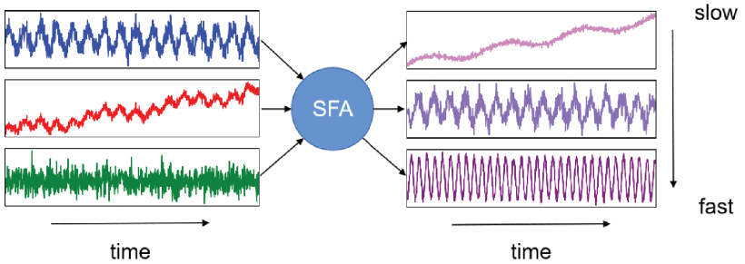
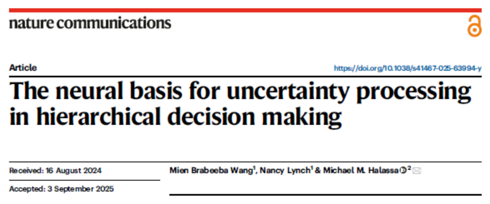
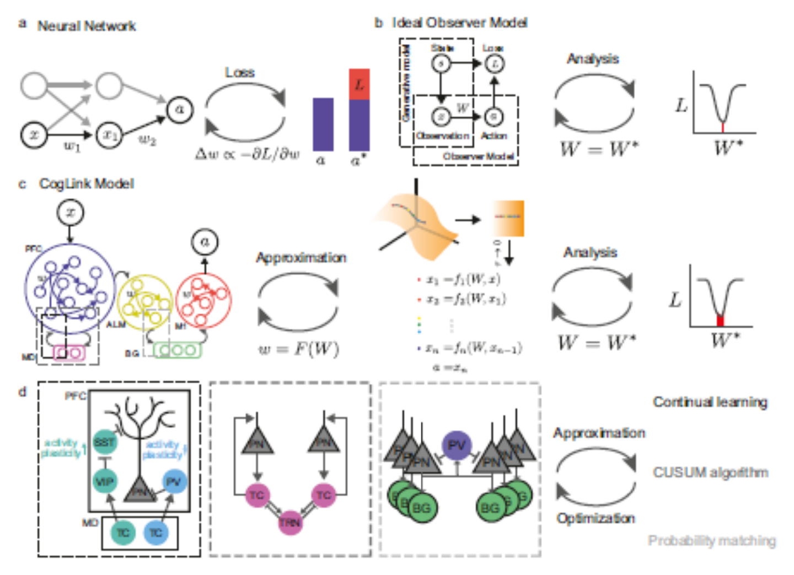

The Path to Automated Narrative Processing Brook Miller, Center for Humanities and Digital Research, University of Central Florida
narrative analysis and generation
how does ongoing narrative processing shape human cognition, and could ai approximate that functionality?
orientating towards, framing, and parsing experience
is narrative processing crucial for human-like AI?
"On or about December 2022..."
"...LLMs changed* human character"
or maybe not.
Long's Sneerers
"You think LLMs could be conscious? Absurd! Don't you know that LLMs are just predicting the next token? Plus, they make stuff up; their preferences are contradictory; their introspection is unreliable; and they're confused about who they even are!"
— Long, Experiencing Machines
Long's Defenders
"Aha, well — aren't humans just predicting the next token? Plus, humans make stuff up, and humans have contradictory preferences; our introspection is unreliable, and we're really confused about who we are too!"
— Long, Experiencing Machines
long's middle path
how might ai be trained to more closely resemble human cognition?
which comes first, experience or language about it?
Long's Bootstrapping
"[LLMs] learned language first and would bootstrap any potential experiences from that, whereas humans can have experiences independently of using language to describe them."
— Long, Experiencing Machines
bootstrapping experience?
looking elsewhere: computer vision
really?
4am honking in a parking lot — SF, 20243-car standoff, North Beach — SF, 2024
embodied ai and online experiences
"a fundamental unit of experience"
— Shipley (2008)
"Event segmentation is a spontaneous outcome of ongoing perception and arises at points where perceptual predictions begin to fail or change… The period between two such consecutive changes in current mental models is an event."
— Shipley & Zacks (2008)
"It is not narratives that shape experiences but, rather, experiences that structure narratives... The mistake is again to suppose that a narrative conceived in abstraction could be brought to bear on a sequence of experiences, ordering them and giving them meaning."
— Menary (2008)
towards narrative as active inference
"Narratives are particularly useful for active inference because they can contribute to both the conservative processes that maintain old memories and use them as models for new events, as well as generating new models through their recombination or projection to produce new stories."
— Bouizegarene et al. (2025)
slow feature analysis
"Temporal data contain a wealth of valuable information, playing an essential role in various machine-learning tasks. Slow feature analysis (SFA), one of the most classic temporal feature extraction models, extracts slowly varying features as high-level representations of temporal data."
— Song & Zhao (2022)

Song & Zhao (2022), n.p.
sfa and biological vision
types of sfa
Song & Zhao (2022), n.p.
online sfa
multi-modal and probabilistic sfa
the integration challenge
sfa's potential
computational models of decision making
coglinks

Wang, Lynch & Halassa (2025)
coglinks' key mechanism

Wang, Lynch & Halassa (2025), n.p.
coglinks' limitations
from well-defined to fuzzy choices
what's next
emotional systems and weak narrativity
the design question
attention architecture
future directions: memory and abstraction
discussion
references
Beatty, J. (2017). Narrative possibility and narrative explanation. Studies in History and Philosophy of Science Part A, 62, 31–41.
Bouizegarene, N., Ramstead, M. J., Constant, A., Friston, K. J., & Kirmayer, L. J. (2024). Narrative as active inference: An integrative account of cognitive and social functions in adaptation. Frontiers in Psychology, 15, 1345480.
Chiang, T. — The Atlantic
Christoff, K., Cosmelli, D., Legrand, D., & Thompson, E. (2011). Specifying the self for cognitive neuroscience. Trends in Cognitive Sciences, 15(3), 104–112.
Long, R. — Experiencing Machines (Substack)
Menary, R. (2008). Embodied Narratives. Journal of Consciousness Studies, 15(6), 63–84.
Miller, B. (2023)
Morgan, M. S., & Wise, M. N. (2017). Narrative science and narrative knowing. Introduction to special issue on narrative science. Studies in History and Philosophy of Science Part A, 62, 1–5.
Schacter, D. L., Benoit, R. G., De Brigard, F., & Szpunar, K. K. (2015). Episodic future thinking and episodic counterfactual thinking: Intersections between memory and decisions. Neurobiology of Learning and Memory, 117, 14–21.
Sheldon, S., McAndrews, M. P., & Moscovitch, M. (2011). Episodic memory processes mediated by the medial temporal lobes contribute to open-ended problem solving. Neuropsychologia, 49(9), 2439–2447.
Shipley, T. F. (2008). An invitation to an event. In Understanding Events: From Perception to Action (pp. 3–30). Oxford University Press.
Shipley, T. F., & Zacks, J. M. (Eds.). (2008). Understanding Events: From Perception to Action. Oxford University Press.
Song, P., & Zhao, C. (2022). Slow down to go better: A survey on slow feature analysis. IEEE Transactions on Neural Networks and Learning Systems, 35(3), 3416–3436.
Tufekci, Z. — The New York Times
Wang, M. B., Lynch, N., & Halassa, M. M. (2025). The neural basis for uncertainty processing in hierarchical decision making. Nature Communications.
Webb, T. W., & Graziano, M. S. A. (2015). The attention schema theory: A mechanistic account of subjective awareness. Frontiers in Psychology, 6, Article 500.
Zacks, J. M., & Tversky, B. (2001). Event structure in perception and conception. Psychological Bulletin, 127(1), 3.
Zahavi, D., & Kriegel, U. (2015). For-me-ness: What it is and what it is not. In Philosophy of Mind and Phenomenology (pp. 48–66). Routledge.